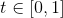
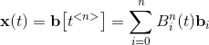
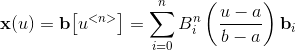

Bézierove krivulje
Bernsteinovi polinomi
De Casteljaunov algoritam
Subdivizija Bézierove krivulje
Derivacija Bézierove krivulje
Podizanje stupnja
Geometrijska neprekidnost
G
2
neprekidnost
Konike
Kružnica
Racionalne Bézierove krivulje
B-splajnovi
Bazne funkcije
Lokalni De Boorov algoritam
Globalni De Boorov algoritam
Kubična B-splajn krivulja
Zatvorena B-splajn krivulja
t
1.
derivacija
hide all
show
show all
2.
derivacija
hide all
show
show all
Derivacija Bézierove krivulje
Na segmentu 

Na segmentu
